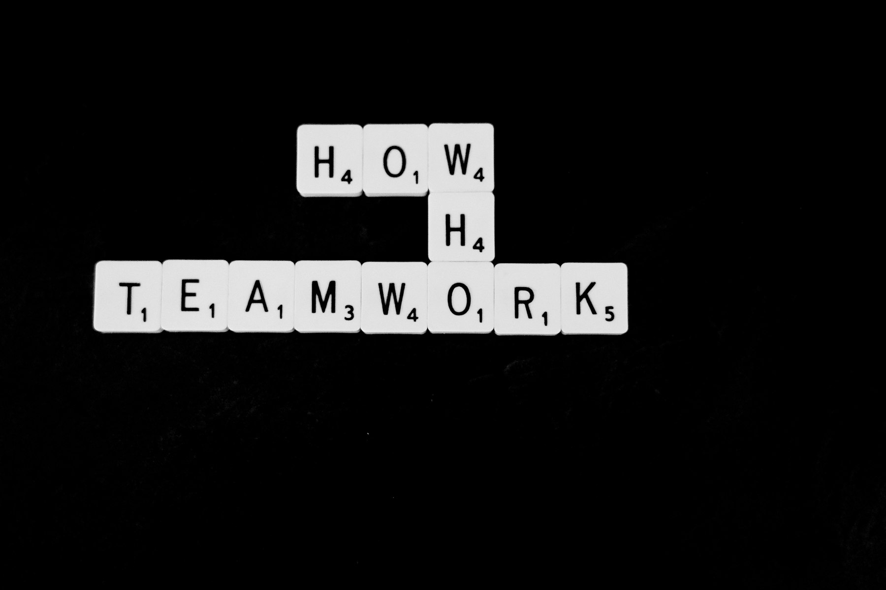
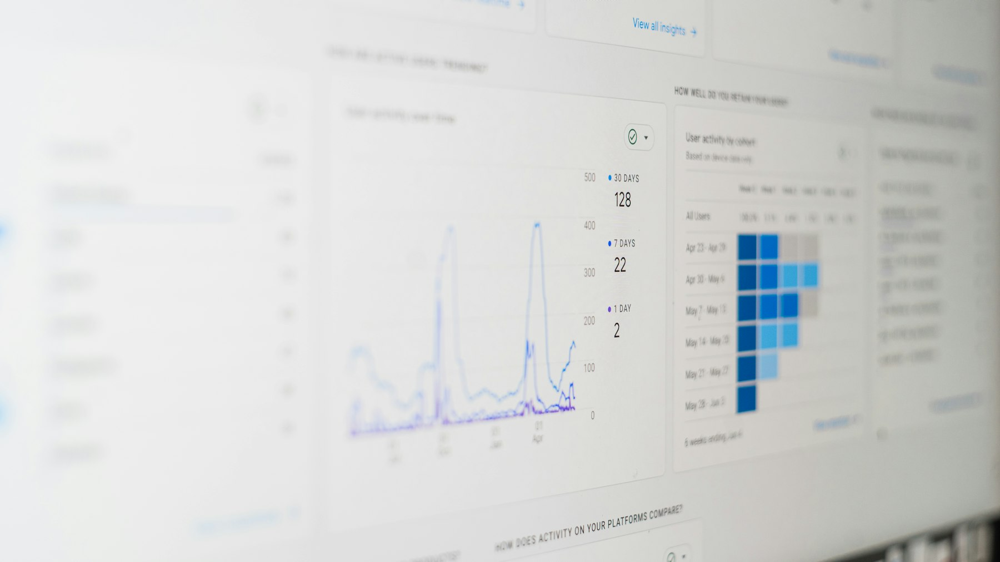

TL;DR
AI tools can greatly enhance workplace productivity through improved task management, communication, automation, and analytics.
By understanding their potential and avoiding common pitfalls, users can implement these solutions effectively for lasting impact.
Understanding AI in the Workplace
AI tools have transformed the way we approach productivity at work.
From automating mundane tasks to enriching decision-making processes, AI acts as a force multiplier.
To start, it's essential to grasp how AI can specifically benefit your workflow.
Depending on your role—whether in marketing, project management, or technical fields—different AI solutions can cater to your needs.
Common uses of AI in the workplace include customer support chatbots, automated report generation, and predictive analytics tools.
Familiarizing yourself with these applications will help you envision how AI can streamline your tasks, save you time, and enhance overall productivity.
Top AI Tools for Task Management
Task management is critical for maintaining productivity.
Tools like Trello, Asana, and ClickUp integrate AI to streamline project workflows.
For example, AI features can help prioritize tasks based on deadlines and resource availability.
To benefit from these tools, begin by defining your project goals clearly.
Then, use AI-powered features such as automated task assignments and timeline predictions to keep your projects on track.
Many of these platforms offer free trials, so take advantage of them to find the best fit for your team.
AI Tools for Communication and Collaboration
Effective communication is key to successful collaboration.
AI-driven tools like Slack and Microsoft Teams can automate meeting notes and summarize conversations.
To maximize their utility, create channels dedicated to specific projects, and invest time in setting up integrations with tools you already use.
AI can assist with translation, scheduling, and even drafting initial messages, allowing your team to focus on creative problem-solving instead of logistical hurdles.

Optimizing Workflows with AI Automation Tools
Automation tools that utilize AI, like Zapier and Integromat, can significantly reduce repetitive tasks.
These platforms allow you to connect various software applications to automate actions—like sending an email notification when a new task is created.
Start by mapping out your repetitive tasks.
Identify which tasks consume the most time and explore automation options for them.
Setting up these integrations may require some initial effort, but the time savings can be substantial, allowing you to focus on higher-level work.
Choosing the Right AI Writing Tools
For professionals in content creation, AI writing tools like Grammarly, Jasper, and Copy.ai enhance productivity by providing suggestions for grammar, tone, and style.
These tools can streamline the writing process from drafting to editing.
To implement them effectively, define your writing goals—whether it's creating blog posts, reports, or marketing materials.
Use the AI's feedback to refine your writing but remain critical of suggested changes, ensuring your unique voice is retained.

Measuring Productivity with AI Analytics Tools
AI tools such as Tableau and Microsoft Power BI offer powerful analytics that can track productivity metrics, project progress, and team performance.
By leveraging these tools, you can make data-informed decisions.
When using analytics tools, focus on key performance indicators (KPIs) relevant to your projects.
Set regular review sessions to analyze data trends and adapt your strategies accordingly, which in turn can highlight areas for improvement and celebrate achievements.
Common Pitfalls to Avoid When Implementing AI Tools
Despite the advantages of using AI tools, organizations often encounter pitfalls during implementation.
Common mistakes include inadequate training, underutilization of features, and neglecting team feedback.
To avoid these issues, ensure comprehensive training for all users, which will increase adoption rates.
Regularly gather feedback to refine processes and encourage a culture of continuous improvement.
Moreover, carefully assess ROI to ensure that the tools align with your business objectives.
FAQ
What are AI tools for productivity?
AI tools for productivity are software applications that use artificial intelligence to streamline tasks, automate processes, and enhance workplace efficiency.
How do I choose the right AI tool for my business?
Start by identifying specific pain points in your workflow, then evaluate tools based on features, compatibility, user reviews, and pricing models.
Can AI tools genuinely improve workplace productivity?
Yes, when implemented correctly, AI tools can save time on repetitive tasks, boost collaboration, and provide valuable insights into workflows.
Are AI tools expensive to implement?
Costs vary greatly depending on the tool, scale, and your business needs. Many offer free trials or tiered pricing to fit different budgets.
How can I ensure successful implementation of AI tools?
Focus on team training, regular feedback loops, and clearly defined objectives to maximize the benefits of AI integration.
Photo credits
- Photo 1: Wonderlane on Unsplash (https://unsplash.com/@wonderlane) (https://unsplash.com/photos/office-table-with-pile-of-papers-6jA6eVsRJ6Q)
- Photo 2: Nick Fewings on Unsplash (https://unsplash.com/@jannerboy62) (https://unsplash.com/photos/black-and-brown-checkered-textile-GoXNygZlftg)
- Photo 3: Hannah Dickens on Unsplash (https://unsplash.com/@hannahdickens) (https://unsplash.com/photos/flat-lay-photography-of-macbook-ruler-and-can-nFkGidFAFZ4)
- Photo 4: Nick Fewings on Unsplash (https://unsplash.com/@jannerboy62) (https://unsplash.com/photos/a-black-and-white-photo-of-scrabble-tiles-spelling-the-word-teamwork-vPWyVZYgVgM)
- Photo 5: VENUS MAJOR on Unsplash (https://unsplash.com/@venusmajor) (https://unsplash.com/photos/woman-in-black-jacket-sitting-on-chair-NDdeOoTtxY0)
- Photo 6: 1981 Digital on Unsplash (https://unsplash.com/@1981digital) (https://unsplash.com/photos/a-computer-screen-with-a-bunch-of-data-on-it-bf9sZBcGQl4)
- Photo 7: Bekky Bekks on Unsplash (https://unsplash.com/@bekkybekks) (https://unsplash.com/photos/yellow-and-white-painted-wall-ZiG6GmNlfeI)